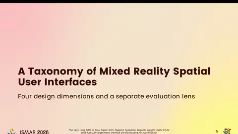
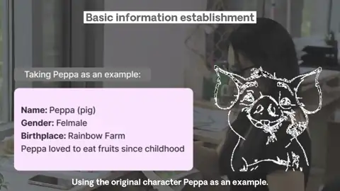
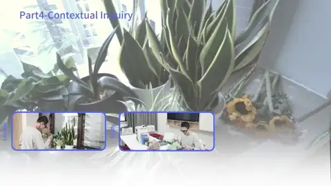
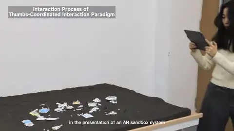
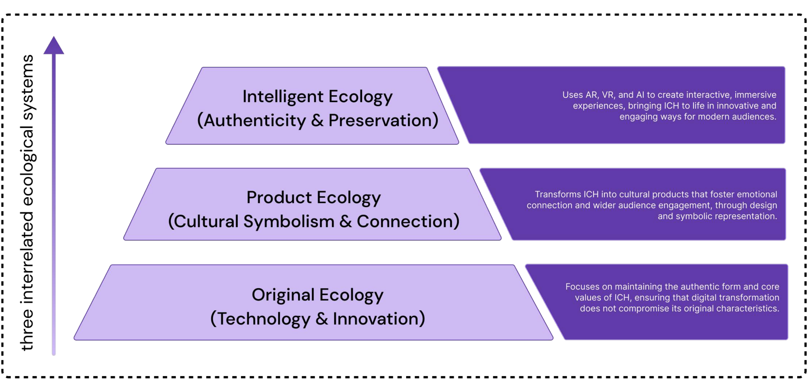
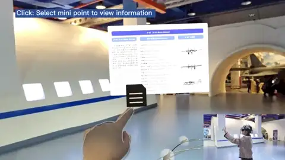
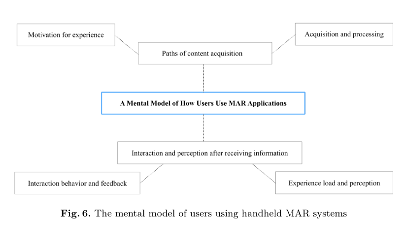
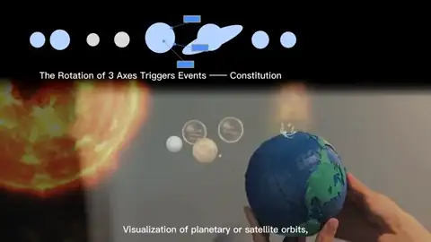
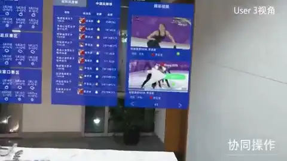

Augmented & Mixed Reality
I investigate how digital content can be meaningfully integrated into physical environments, with particular attention to spatial interaction, embodied experience, and context-aware interfaces.
Ph.D. Candidate in Design · Beihang University
Hi, I am Xiaozhan Liang, a Ph.D. candidate at School of New Media Art & Design / State Key Laboratory of Virtual Reality Technology and Systems in Beihang University.
My research focuses on augmented and mixed reality, user-centered design, and interaction design. I am especially interested in how spatial interfaces can support intuitive interaction, meaningful engagement, and new ways of understanding digital information in everyday and professional contexts. I have published 10 papers and artworks at the top international HCI/XR conferences.
I welcome conversations about research collaborations, interdisciplinary design, and emerging forms of human–computer interaction.
Our systematic review of spatial user interfaces in mixed reality was accepted to IEEE ISMAR 2026 and will appear in IEEE TVCG.
Our work on transforming everyday objects into smart interfaces was accepted to CHI 2025.
Our dual-thumb 3D interaction framework for large-tablet augmented reality was published in the International Journal of Human–Computer Interaction.
I investigate how digital content can be meaningfully integrated into physical environments, with particular attention to spatial interaction, embodied experience, and context-aware interfaces.
I use iterative design processes and empirical user research to understand people's goals, behaviors, and challenges, ensuring that technology responds to real human needs.
I design and study novel interaction techniques that make complex systems more intuitive, expressive, and accessible across emerging devices and environments.


DRS 2026 · Edinburgh, United Kingdom · First author
2026
CHI Extended Abstracts 2025 · Yokohama, Japan · CCF-A · First author
2025
International Journal of Human–Computer Interaction · First author
DOI: 10.1080/10447318.2025.2586817
2025
Cumulus Conference 2025 · Nantes, France · First author
DOI: not available
SIGGRAPH Asia 2024 Posters · Tokyo, Japan · CCF-A · First author
2024
CHI Extended Abstracts 2024 · Honolulu, Hawai‘i, USA · CCF-A
2024
HCI International 2024 – Late Breaking Papers · Washington, DC, USA · EI Indexed · First author
DOI: 10.1007/978-3-031-76812-5_8

SIGGRAPH Asia 2023 XR · Sydney, Australia · CCF-A · First author
2023
Chinese CHI 2022 · Guangzhou, China · First author
2022School of New Media Art and Design · Beihang University · Beijing, China
Beihang University · Beijing, China
Beijing Outstanding Graduate Award
Selected for the Young Science and Technology Talent Development Program
China Association for Science and Technology (CAST)
National Scholarship
China's highest national-level scholarship for students
Gold Award, Beijing “Challenge Cup” National Undergraduate Extracurricular Academic Science and Technology Works Competition
Beijing Outstanding Graduation Thesis/Design Award
Shen Yuan Medal, Beihang University
The highest honor of Beihang University
May Fourth Medal, Beihang University
Xiaomi Grand Prize Scholarship
Reviewer, ACM CHI 2026 Posters
Editorial Assistant, Journal of Graphics
Executive President, Beihang University Student Union
I am always happy to discuss research ideas, interdisciplinary collaborations, and opportunities related to augmented and mixed reality or interaction design.